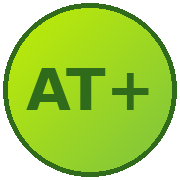

Última actualización: octubre de 2026
1.1. ATMAS es la aplicación del Club Las Avestruces (Academia de Tenis AT+), ubicado en Quilicura, Región Metropolitana, Chile.
1.2. ATMAS consiste en una aplicación que organiza el ranking del club, torneos, reservas de cancha y la vida de la academia, conectando a sus jugadores con la información y gestión de sus actividades deportivas (la "Aplicación" o la "Plataforma").
1.3. Esta política de privacidad de la Plataforma es aplicable y deberá ser respetada por todos los usuarios que de cualquier modo ingresen o utilicen la Aplicación, o cualquiera de los servicios asociados a la misma.
La protección de los datos personales de nuestros usuarios es importante para ATMAS. La presente Política de Privacidad describe cómo tratamos y protegemos los datos de los usuarios, cuyas cláusulas se expresan a continuación:
ATMAS recibe y almacena la información que los usuarios introducen en la Aplicación, especialmente: nombre, apellidos, correo electrónico, número telefónico, comuna, nivel de juego y, si corresponde, el RUT. Esta información se recopila para identificar al usuario dentro del club, gestionar su perfil, su ranking, sus reservas de cancha y su participación en torneos y clases.
El usuario autoriza expresamente a ATMAS, en los términos del artículo 4 de la Ley 19.628, a utilizar sus datos para los fines descritos en esta política. Esta autorización podrá ser revocada en cualquier momento por el usuario, siguiendo el procedimiento indicado en la cláusula 2.4. ATMAS no vende ni comparte los datos de sus usuarios con terceros ajenos al funcionamiento del club, salvo con proveedores estrictamente necesarios para operar el servicio (por ejemplo, el procesador de pagos usado para inscripciones a torneos o arriendo de cancha).
Al crear tu cuenta, aceptas recibir notificaciones relacionadas con tu actividad en el club (confirmaciones de reserva, resultados de partidos, avisos de torneos y comunicaciones administrativas de la academia).
Los usuarios podrán en todo momento verificar, corregir y/o eliminar los datos que hayan registrado en la Aplicación, así como solicitar que se deje sin efecto la autorización indicada en la cláusula 2.2. Para cualquiera de estas peticiones, el usuario deberá contactar a la administración del Club Las Avestruces.
ATMAS se reserva el derecho a modificar la presente Política de Privacidad, de tiempo en tiempo, para reflejar cambios en la ley, en nuestras políticas, en la tecnología o en los procesos del club. Si ATMAS decide modificar este documento, la modificación será comunicada al usuario publicándola en la Plataforma.
ATMAS guarda cierta información en el almacenamiento local de tu navegador o dispositivo (localStorage) para mantener tu sesión iniciada y que la app funcione más rápido. No utilizamos cookies de rastreo publicitario de terceros.
3.1. ATMAS se reserva el derecho, a su exclusiva discreción, de modificar esta política de tiempo en tiempo.
3.2. El hecho de continuar accediendo a la Plataforma después de notificada una modificación implica que el usuario acepta quedar obligado por la política actualizada. Si el usuario no está de acuerdo, deberá cesar de inmediato el uso de la Aplicación.
Esta política de privacidad es para beneficio del usuario y de ATMAS, y no está destinada a beneficiar a terceros.
Toda notificación relacionada con esta política se cursará por correo electrónico (a la dirección proporcionada por el usuario) o mediante publicación en la Plataforma.
Para todos los efectos derivados de esta política de privacidad, el usuario y ATMAS fijan su domicilio en la comuna de Quilicura, Santiago, Chile.
Esta política de privacidad estará regida íntegramente por las leyes de la República de Chile, y cualquier disputa relacionada con su contenido será resuelta por los Tribunales Ordinarios de Justicia correspondientes al domicilio indicado en la cláusula anterior.
El usuario acepta expresamente la presente Política de Privacidad. Si no está de acuerdo con ella, no podrá utilizar ni acceder a la Aplicación.